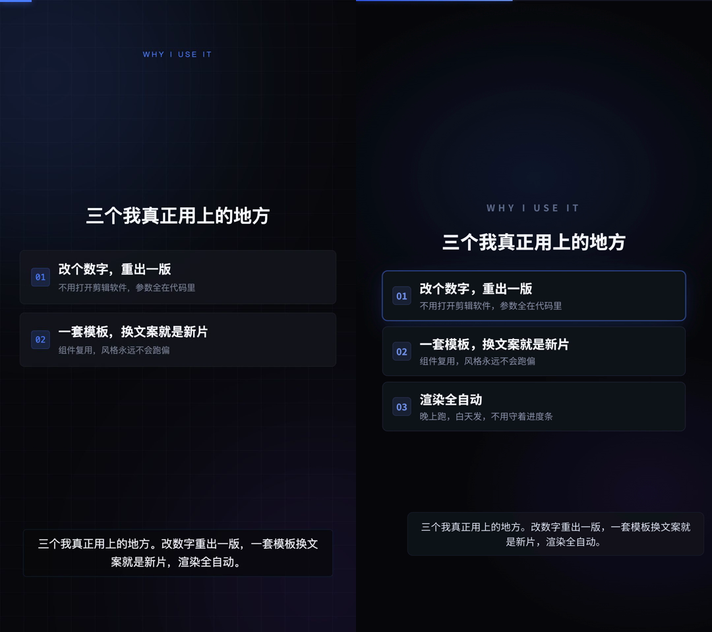

成片：同一份文案、同一段配音，HyperFrames 渲染版
上一篇的成片是 Remotion 做的，渲染用了 219 秒。真正让我在意的是另一个问题：Remotion 不是开源软件，它是 source-available 许可，批量出片当服务卖要按次付费。如果视频生产最后要做成流水线，这个费用迟早会变成设计约束。
HyperFrames 是 HeyGen 开源的同类工具，Apache-2.0，自称「Write HTML. Render video. Built for agents」。它的写法跟 Remotion 有一处根本分歧：
| Remotion | HyperFrames | |
|---|---|---|
| 写法 | React 组件（JSX） | 纯 HTML + CSS + 可 seek 的动画 |
| 构建 | 必须打包 | 无构建，index.html 直接预览 |
| 动画 | React 里的插值函数 | GSAP 时间轴挂到 window.__timelines |
| 许可 | source-available，商业渲染按次计费 | Apache-2.0，无按次费用 |
这两条路渲染时都走 headless Chrome + FFmpeg，所以画质理论上没有量差。真正要比的是改起来有多快、出错时有没有东西替你检查。
不需要 npm install，CLI 走 npx 即可，只要求 Node 22+ 和 FFmpeg 在 PATH 里：
npx hyperframes init hf-topic --non-interactive --resolution=portrait
cd hf-topic
npx hyperframes check # 校验
npx hyperframes render -o renders/out.mp4 -q looks
生成的项目结构极简：index.html 就是整条片子，没有 src 目录、没有打包配置。根节点用 data 属性描述画布：
<div id="root" data-composition-id="main" data-start="0" data-duration="41.5" data-width="1080" data-height="1920">
时间控制全部走两个属性：data-start 标记它从第几秒开始存在，data-duration 决定它存在多久。渲染器按秒 seek，所以画面必须是时间的纯函数——不能有 Date.now()、不能有 Math.random()、不能有网络请求。
8 段结构、1245 帧、41.5 秒，全部对齐上一篇的时间轴，所以这条片子是一比一重做，不是新创作。改的只有实现方式。
这是整件事里最有价值的部分。写完第一版，我跑了 check，它返回 26 个 error、18 个 warning。没有一个是误报，全部是真实的版式缺陷：
text_occluded，报了十几条，每条都定位到具体元素，并给出覆盖比例：
selector: #s1a containerSelector: #c1 > span:nth-of-type(1) coveredFraction: 1 message: Text is hidden beneath an opaque element.
原因是我给字幕容器复用了 .clip 这个「全帧盒子」样式，它带 top:0，于是字幕条实际从 y=0 一直铺到 y=1770，把整屏文字压在不透明的背景下面。渲染出来会是「字全没了」，而 Remotion 那边没有任何东西会提示我这件事，只能靠截图肉眼找。
canvas_overflow 直接给了数：三张 430px 卡片 + 两个 24px 间距 = 1338px，超出左侧 94px。修法是缩卡片或改纵向排布。
text_box_overflow 连容器该多宽都算好了（「widen the container to at least ~1131px」）。中文长句在竖屏里手动断行是必要的，靠自动换行会断在很难看的位置。
Check passed。对比一下：Remotion 那版我改了多少轮？至少四轮，全靠截图看。这不是能力差距，是有没有把验收做成工具的差距——正好对上我一直在说的那个问题：AI 写完代码，谁来证明它是对的。
第一版我用 PingFang SC，macOS 自带、浏览器里也正常。但渲染器直接判违规：
[StaticGuard] Invalid HyperFrame contract: Font family used without @font-face declaration: pingfang sc. These are not in the auto-resolved font list, so the renderer cannot supply them automatically. Text will fall back to a generic font.
原因是渲染机用一套确定性字体注入机制，只认映射表里的族（Inter、JetBrains Mono、Noto 系列等），系统字体不在其中。中文会静默回退，不报错，只是字变难看。
解法是自己带字体文件。我下的是 Noto Sans SC 的简体子集 woff2，5 个字重各 1.1MB，本地声明：
@font-face {
font-family: "NSC"; font-weight: 800; font-display: block;
src: url("assets/nsc-800.woff2") format("woff2");
}
代价也在这里：成片的中文字形明显比原片细。原片用的是 PingFang 的厚重字重，Noto 的 800 顶不上去。这一点骗不了人，两条片子放在一起看，字体质感是唯一肉眼可辨的差异。

左：Remotion 版 · 右：HyperFrames 版（同一时间点）
差异只有两处：一是字体厚度，二是 HyperFrames 版把字幕抬到了 bottom: 232px（检查器提示底部 200px 会被抖音 UI 压住）；此外左边这张是 15 秒的截图，第三条还没出现，右边是 16 秒，三条已经到齐。
配色、卡片结构、编号方块、进度条、动效节奏全部一致——因为都是照着同一个设计稿做的。同一个设计稿，两条工具链的产出不该有差别，有差别才是问题。
| 指标 | HyperFrames | Remotion |
|---|---|---|
| 成片规格 | 1080×1920 / 30fps / 41.5 秒 / 1245 帧 | |
| 渲染墙钟 | 49.5 秒（首次 64.6 秒） | 219 秒 |
| 产物大小 | 4.9 MB | 5.2 MB |
| 视频码率 | 804 kbps | 992 kbps |
| 耗时构成 | 截图捕获 41.9s · 音频 43.4s · 编译 6.2s | 打包 29s + 逐帧渲染 |
| 校验 | 内置 7 组自动检查 | 无 |
快约 4 倍，省在两处：没有打包步骤；音频预处理走独立通道。但要注意——音频处理 43.4 秒已经比截图捕获还长，是全流程的真正瓶颈。真做批量的话，优化点不在渲染器，在音频那一段。
做完这一轮，有三个判断可以落下来：
check，错了有定位。回到最初那个问题——AI 做出来的东西有没有护城河。这条片子的答案是：工具没有，模板和选题有，但模板也会被复刻。真正稀缺的还是那句老话：知道该做什么，比知道怎么做值钱。
本文记录于 2026-11-24 · 工程在本地 hf-topic 项目，index.html 约 200 行包含全部代码与时间轴